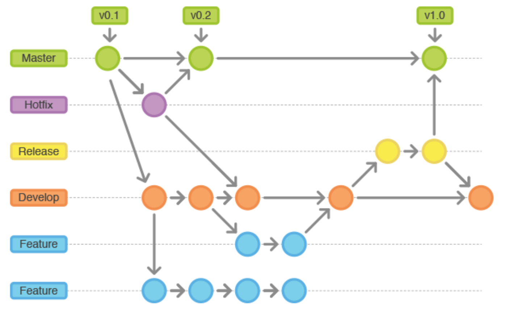
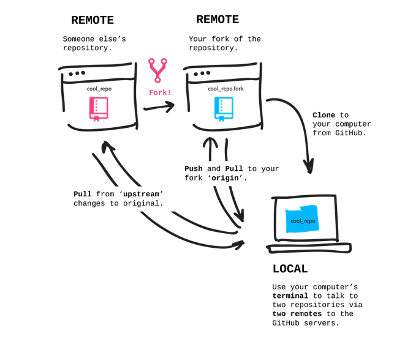

Getting Started with Git
 +
+
Instructor: Chris Fulton
Learning Objectives
- Download and install Git
- What is version control? | What is Git?
- Commonly Used Git commands - Cheatsheet
- Git Workflow | Git Branching | Git Update and Share
- Understanding Github
- Remote Repository & Local Repository
- ReadMe Documentation & .gitIgnore File
- Team Workflow
- Forking Workflow | Branching Strategy (Collaboraters) | Organization Set-up
- Team guidlines, considerations, process and communication
- Github Features - Pages | Actions | Repo settings
Download and install Git
- Navigate to git-scm.com
- Download the latest release for your operating system
- Install using default configurations - A git bash terminal will come with your download
- Once downloaded, open the "Git bash" terminal and enter the command
git --version
What is Version Control?
The task of keeping a software system consisting of many versions and configurations well organized
What is Git?
Git is a free and open source distributed version control system designed to handle everything from small to very large projects with speed and efficiency.
Check out the video below:
Commonly Used Git commands - Cheatsheet
The cheatsheet represents some of the most used commands that allows you to achieve the Git workflow.
Click here for an exhaustive book on git commands
Git workflow

Activity A
<!DOCTYPE html>
<html>
<head>
<title>Basic Structure </title>
</head>
<body>
<img src="" alt="" />
</body>
</html>
- Create a new web project open project in editor and initialize git into the the project
- Create a file and name it git.html
- Copy the HTML code above and run the various workflow commands to make an initial commit.
- Run the git status command and make sure your directory does not have untracked files.
- Run the commands to create a new branch called "extend_project" and switch to the new branch.
- Add a new page to the "extend_project" branch and name it github.html
- Run the various commands to commit the new file and merge the "extend_project into the master branch
Git Branching & Merging
Branching allows you to create a copy of your master branch. You can experiment and test new functionality on new branches. Branching allows you to keep your master branch clean.

Git Update and Share
Git allows you to retrieve and update remote repositories and update local repositories.
Understanding Github

Github Repository
- Allows you to host code remotely for sharing with others and to view others repositories
- Make edits via a web browser
- Used for collaboration and Team Projects
- You can documentation to your repository using a ReadMe File.
- The added benefit of hosting a static website via github pages
- NEW!! you can implement CI/CD functionality using the Actions tab
.gitIgnore File
- The .gitignore file is a text file that tells Git which files or folders to ignore in a project.
- To create a local .gitignore file, create a text file and name it .gitignore
- Each new line should list an additional file or folder that you want Git to ignore.
- Pattern Matching
- * is used as a wildcard match
- / is used to ignore pathnames relative to the .gitignore file
- # is used to add comments to a .gitignore file
ReadMe File
# Learning about ReadMe Files
A ReadMe File helps provide documentation for your repository.
## MarkDown Syntax
Consist of Headers, Lists, Images, Links, Emphasis and blockquotes
## You can also document code
```python
import foobar
foobar.pluralize('word') # returns 'words'
foobar.pluralize('goose') # returns 'geese'
foobar.singularize('phenomena') # returns 'phenomenon'
```
## Definition
Markdown is a way to style text on the web.
Please make sure to update tests as appropriate.
## GoodBy
[Purchase a Shirt](https://reacttees.com)
- Readme.com is a helpful site - https://www.makeareadme.com/
- ReadMe files provides a convenient way to document our repository and provide instruction on how to use whats found in the repository.
Team Workflow
Varying Workflows
A company can structure thier workflow a variety of ways. It's important to understand the procedures and policy of a company's version control setup.
Branching Strategy
Team determines a strategy on how they will utilize the branching functionality to successfully version control their project. Team members have full read-write access.
Forking
Allows for more control over repository and allows anyone to contribute. Preferred workflow for open source projects with a community
Organizations
You can add repositories to your teams with more flexible levels of access (Admin, Write, Read). It's not a workflow, but rather a way of providing guidance to respositories.
Branching Workflow Strategy
- Team Lead – the person who will give guidance to the project and creates the repository.
- Team lead initiates the project by creating repository and uploading project. Team lead then adds other members as collaborators in repository settings tab.
- Team determines strategy for how remote branches will be used. ex. feature branching, dev environment/prod/functionality branch
- Based on your teams branching stategy, create the brances on the remote repository.

Branch Strategy
Typical Branch Strategy - Companies vary on strategy, but this process should be well documented and communicated to each member.

Branching Workflow Strategy Process for team members
Step 1
Create a folder on your local machine to bring down remote copy. Execute the command "git init" to initialize git.
Step 2
Connect to remote repository by running "git remote add origin REMOTE_REPO_URL"
Step 3
Execute the command "git pull origin SPECIFIC_BRANCH" to bring down files onto local machine.
Step 4
Create a new local branch by executing the command "git branch "SPECIFIC_BRANCH" checkout to new local branch by executing "git checkout SPECIFIC_BRANCH"
Step 5
Make the necessary adjustments - make necessary commits - Execute the "git push origin SPECIFIC_BRANCH" to push up changes to remote repository.
Caution: Push to agreed upon branch decided as a team
Step 6
Execute a pull request on the hosted Github repository page - Perfect time for code review as a team - communication tool set-up to notify team
Forking Strategy
A strategy typically used for opensource projects.
Team Activity & Practice
Work with your team to decide upon a branching strategy and take turns documenting your strategy in a Readme.md file. Complete the three steps below.
Step 1
Decide upon a team lead to do the initial repository set-up and addition of collaborators to repo.
Step 2
In your readme file - Provide the number of branches you will have, the name and purpose of each branch.
Step 3
In your readme file - Generate a list of versioning workflow guidlines your team will agree to. Ex. Code review prior to merging into prod.
Video Lectures
References
- https://sentheon.com/blog/git-cheat-sheet.html#.XWAt4uhKiUk
- https://github.com/oppia/oppia/wiki/Why-fork-and-clone-Oppia%3F